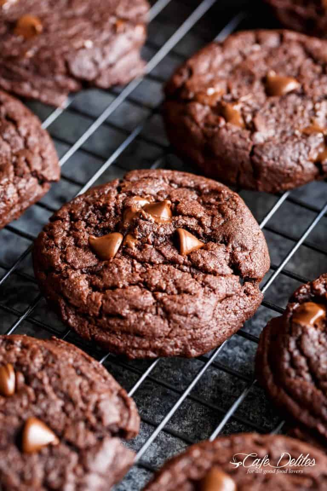

Fudgy brownie cookies

Description
Best Fudgy Chocolate Brownie Cookies are a one bowl wonder ready in minutes, and named better than a brownie cookie! They disappear in seconds!
Ingredients
- 1/2 cup unsweetened cocoa powder
- 1 cup white granulated sugar
- 1/2 cup melted butter
- 3 tablespoons vegetable oil
- 1 egg
- 2 teaspoons pure vanilla extract
- 1 1/3 cups all purpose flour (or plain flour)
- 1/2 teaspoon baking powder
- 1/2 teaspoon salt
- 1/3 cup semi sweet chocolate chips, (add more if desired)
Directions
- Preheat oven to 350°F (175°C). Line 2 cookie sheets or baking trays with parchment paper (baking paper).
- In a medium-sized bowl, mix together the cocoa powder, white sugar, butter and vegetable oil. Beat in egg and vanilla until fully incorporated.
- Add the flour, baking powder, and salt; stir the dry ingredients first before mixing them through the wet ingredients until a dough forms (do not over beat). Fold in the chocolate chips.
- Scoop out 1-2 tablespoonful of dough with a cookie scoop (or small ice cream scoop), and place onto prepared baking sheets. Press them down as thick or thin as you want your cookies to come out.
- Bake in hot preheated oven for 10-12 minutes. The cookies will come out soft from the oven but will harden up as they cool. (Be careful not to over bake as they will dry out.)
- Allow to cool on the cookie sheet for 10 minutes before transferring to wire racks to cool.
HOME